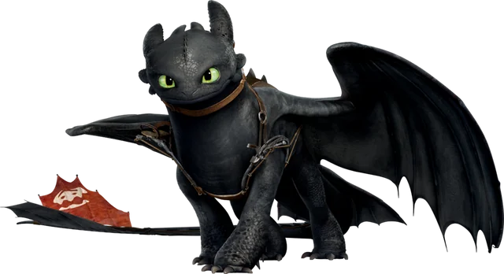

La Furia Nocturna es una de las especies de dragones más rápidas, inteligentes y raras de las conocidas, ya que Desdentado es el último miembro conocido de su especie. Es de tamaño mediano y tiene un cuerpo oscuro y elegante con escamas negras. También tiene patrones tenues más claros similares a los de una manta raya.
Dragones
Furia Nocturna

Nadder Mortifero
La Furia Nocturna es una de las especies de dragones más rápidas, inteligentes y raras de las conocidas, ya que Desdentado es el último miembro conocido de su especie. Es de tamaño mediano y tiene un cuerpo oscuro y elegante con escamas negras. También tiene patrones tenues más claros similares a los de una manta raya.

Furia Luminosa
La Furia Nocturna es una de las especies de dragones más rápidas, inteligentes y raras de las conocidas, ya que Desdentado es el último miembro conocido de su especie. Es de tamaño mediano y tiene un cuerpo oscuro y elegante con escamas negras. También tiene patrones tenues más claros similares a los de una manta raya.
Cremallerus Espantosus
La Furia Nocturna es una de las especies de dragones más rápidas, inteligentes y raras de las conocidas, ya que Desdentado es el último miembro conocido de su especie. Es de tamaño mediano y tiene un cuerpo oscuro y elegante con escamas negras. También tiene patrones tenues más claros similares a los de una manta raya.

Pesadilla Monstruosa

La Furia Nocturna es una de las especies de dragones más rápidas, inteligentes y raras de las conocidas, ya que Desdentado es el último miembro conocido de su especie. Es de tamaño mediano y tiene un cuerpo oscuro y elegante con escamas negras. También tiene patrones tenues más claros similares a los de una manta raya.
Gronckle
La Furia Nocturna es una de las especies de dragones más rápidas, inteligentes y raras de las conocidas, ya que Desdentado es el último miembro conocido de su especie. Es de tamaño mediano y tiene un cuerpo oscuro y elegante con escamas negras. También tiene patrones tenues más claros similares a los de una manta raya.

Terror Terriblee

La Furia Nocturna es una de las especies de dragones más rápidas, inteligentes y raras de las conocidas, ya que Desdentado es el último miembro conocido de su especie. Es de tamaño mediano y tiene un cuerpo oscuro y elegante con escamas negras. También tiene patrones tenues más claros similares a los de una manta raya.
Personajes
Hipo
Hipo Horrendo Abadejo III es el protagonista principal de la franquicia animada Cómo entrenar a tu dragón de DreamWorks. Es el hijo de Valka y el difunto jefe de Berk, Estoico el Vasto, lo que lo convierte en el heredero y, más tarde, en el jefe de la tribu. Tiene 15 años en la primera película y los primeros tres especiales, 16 al en "Dragones de Berk", 18 en "El origen de las carreras de dragones", 19 en Carrera al Borde, 20 años en Cómo entrenar a tu dragón 2, 21 años en Cómo entrenar a tu dragón: El mundo oculto y 31 en el final de esta y "Regreso a casa". Su dragón es un Furia Nocturna llamado Desdentado.
Astrid
Hipo Horrendo Abadejo III es el protagonista principal de la franquicia animada Cómo entrenar a tu dragón de DreamWorks. Es el hijo de Valka y el difunto jefe de Berk, Estoico el Vasto, lo que lo convierte en el heredero y, más tarde, en el jefe de la tribu. Tiene 15 años en la primera película y los primeros tres especiales, 16 al en "Dragones de Berk", 18 en "El origen de las carreras de dragones", 19 en Carrera al Borde, 20 años en Cómo entrenar a tu dragón 2, 21 años en Cómo entrenar a tu dragón: El mundo oculto y 31 en el final de esta y "Regreso a casa". Su dragón es un Furia Nocturna llamado Desdentado.
Mocoso
Hipo Horrendo Abadejo III es el protagonista principal de la franquicia animada Cómo entrenar a tu dragón de DreamWorks. Es el hijo de Valka y el difunto jefe de Berk, Estoico el Vasto, lo que lo convierte en el heredero y, más tarde, en el jefe de la tribu. Tiene 15 años en la primera película y los primeros tres especiales, 16 al en "Dragones de Berk", 18 en "El origen de las carreras de dragones", 19 en Carrera al Borde, 20 años en Cómo entrenar a tu dragón 2, 21 años en Cómo entrenar a tu dragón: El mundo oculto y 31 en el final de esta y "Regreso a casa". Su dragón es un Furia Nocturna llamado Desdentado.
Patapez
Hipo Horrendo Abadejo III es el protagonista principal de la franquicia animada Cómo entrenar a tu dragón de DreamWorks. Es el hijo de Valka y el difunto jefe de Berk, Estoico el Vasto, lo que lo convierte en el heredero y, más tarde, en el jefe de la tribu. Tiene 15 años en la primera película y los primeros tres especiales, 16 al en "Dragones de Berk", 18 en "El origen de las carreras de dragones", 19 en Carrera al Borde, 20 años en Cómo entrenar a tu dragón 2, 21 años en Cómo entrenar a tu dragón: El mundo oculto y 31 en el final de esta y "Regreso a casa". Su dragón es un Furia Nocturna llamado Desdentado.
Chusco y Brusca

Hipo Horrendo Abadejo III es el protagonista principal de la franquicia animada Cómo entrenar a tu dragón de DreamWorks. Es el hijo de Valka y el difunto jefe de Berk, Estoico el Vasto, lo que lo convierte en el heredero y, más tarde, en el jefe de la tribu. Tiene 15 años en la primera película y los primeros tres especiales, 16 al en "Dragones de Berk", 18 en "El origen de las carreras de dragones", 19 en Carrera al Borde, 20 años en Cómo entrenar a tu dragón 2, 21 años en Cómo entrenar a tu dragón: El mundo oculto y 31 en el final de esta y "Regreso a casa". Su dragón es un Furia Nocturna llamado Desdentado.